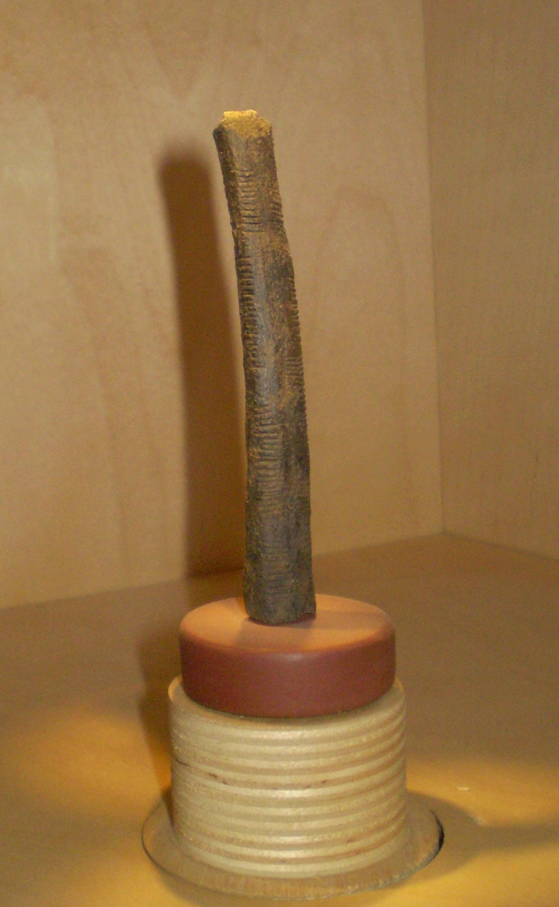

19,000BC - Ishango Bone
The Ishango bone, may indicate that—even so early—material objects were used for simple arithmetical operations, and it may provide evidence of some knowledge of prime numbers (although this is disputed).
The Ishango bone, may indicate that—even so early—material objects were used for simple arithmetical operations, and it may provide evidence of some knowledge of prime numbers (although this is disputed).
The abacus, the first known calculator, was probably invented by the Babylonians as an aid to simple arithmetic around this time period. It laid the foundations for positional notation and later computing developments.
First known use of zero by ancient Egyptians in accounting texts.
Indian mathematician Pingala first described the binary number system which is now used in the design of essentially all modern computing equipment.
The Antikythera mechanism: A clockwork, analog computer believed to have been designed and built in the Corinthian colony of Syracuse.
Chinese mathematicians first used negative numbers.
Leonardo da Vinci produced drawings of a device consisting of interlocking cog wheels which can be interpreted as a mechanical calculator capable of addition and subtraction.
French polymath Blaise Pascal invented the mechanical calculator.[29] Called machine arithmétique, Pascal's calculator and eventually Pascaline, its public introduction in 1645 started the development of mechanical calculators first in Europe and then in the rest of the world.
Philipp Matthäus Hahn, in what is now Germany, made a successful portable calculator able to perform all four mathematical operations.
British Mathematician George Boole developed binary algebra (Boolean algebra)[43] which has been widely used in binary computer design and operation, beginning about a century later. See 1939.

Walther Bothe built an AND logic gate - the coincidence circuit, for use in physics experiments, for which he received the Nobel Prize in Physics 1954. Digital circuitries of all kinds make heavy use of this technique.

Colossus was a set of computers developed by British codebreakers in the years 1943–1945 to help in the cryptanalysis of the Lorenz cipher.
This is considered the birthday of modern computing.[citation needed] Maurice Wilkes and a team at Cambridge University executed the first stored program on the EDSAC computer, which used paper tape input–output. Based on ideas from John von Neumann about stored program computers, the EDSAC was the first complete, fully functional von Neumann architecture computer.
Paul Benioff is the first to show that quantum computing is theoretically possible.
World Wide Web, invented by Tim Berners-Lee who wanted to use hypertext to make documents and information seamlessly accessible over different kinds of computers and systems, and wherever they might be in the world. He was working in computing at CERN, the European Particle Physics Laboratory in Switzerland, at the time.
The Linux kernel is born with the following post to the Usenet Newsgroup comp.os.minix by Linus Torvalds, a Finnish college student: "Hello everybody out there using minix- I'm doing a (free) operating system (just a hobby, won't be big and professional like gnu) for 386(486) AT clones."[1]

Scientists at MIT created the first five-atom quantum computer with the potential to crack the security of traditional encryption schemes.[26]

Google claims to have achieved Quantum supremacy.